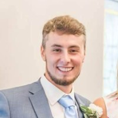

|  |
Matty PercivalBudding data / software engineer based in London, UK and keen to develop in the tech industry. Recently graduated from the Generation UK & Ireland’s Data Engineering Bootcamp,
I am eagerly pursuing the next challenge in my technical career.
|
| Date | Position held | Description |
|---|---|---|
| Oct 2022 - Jan 2023 | Data Engineering Bootcamp, Generation, London Healthcare Associated Infection Research, Faculty of Medicine & Health University of Leeds |
A 12 week intensive course focussing on supplying learners with the technical skills and mindset
including Python (group and solo projects), TDD, OOP, AWS, SQL, Unix, GIT, DOCKER, Data
normalisation, ETL, AGILE.
|
| March 2021 – May 2022 | Research Technician Healthcare Associated Infection Research, Faculty of Medicine & Health University of Leeds |
Operating and maintaining laboratory equipment and stocks to efficiently produce large amounts of
growth media for ongoing research. Setting up and reading experiments and recording results.
|
| Oct 2019 – March 2020 | Laboratory Assistant Faculty of Biological Sciences, University of Leeds |
Working with colleagues to run faculty autoclaves and washing machines, collect / return laboratory
glassware and remove waste.
|
| Oct 2016 – March 2019 | Laboratory Assistant Oral Biology, Faculty of Medicine & Health, University of Leeds |
Maintaining perishable stocks, keeping work areas tidy, inducting new lab users in fire safety and
training new users on various pieces of scientific equipment.
|
|
|